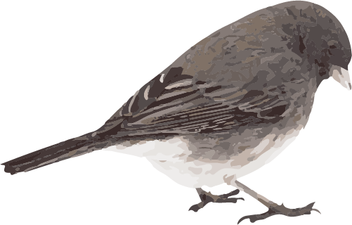

A little gray bird with an echoing voice, the Tufted Titmouse is common in eastern deciduous forests and a frequent visitor to feeders. The large black eyes, small, round bill, and brushy crest gives these birds a quiet but eager expression that matches the way they flit through canopies, hang from twig-ends, and drop in to bird feeders. When a titmouse finds a large seed, you’ll see it carry the prize to a perch and crack it with sharp whacks of its stout bill.
Tufted Titmice eat mainly insects in the summer, including caterpillars, beetles, ants and wasps, stink bugs, and treehoppers, as well as spiders and snails. Tufted Titmice also eat seeds, nuts, and berries, including acorns and beech nuts. Experiments with Tufted Titmice indicate they always choose the largest seeds they can when foraging.
Tufted Titmice live in deciduous woods or mixed evergreen-deciduous woods, typically in areas with a dense canopy and many tree species. They are also common in orchards, parks, and suburban areas. Generally found at low elevations, Tufted Titmice are rarely reported at elevations above 2,000 feet.
Tufted Titmice nest in cavities but aren’t able to excavate them on their own. They use natural holes and old nest holes made by several woodpecker species, including large species such as Pileated Woodpecker and Northern Flicker. Additionally, Tufted Titmice also nest in artificial structures including nest boxes, fenceposts, and metal pipes.
Titmice build cup-shaped nests inside the nest cavity using damp leaves, moss and grasses, and bark strips. They line this cup with soft materials such as hair, fur, wool, and cotton, sometimes plucking hairs directly from living mammals. Naturalists examining old nests have identified raccoon, opossum, dog, fox squirrel, red squirrel, rabbit, horse, cow, cat, mouse, woodchuck, and even human hair in titmouse nests. Nest construction takes 6 to 11 days.